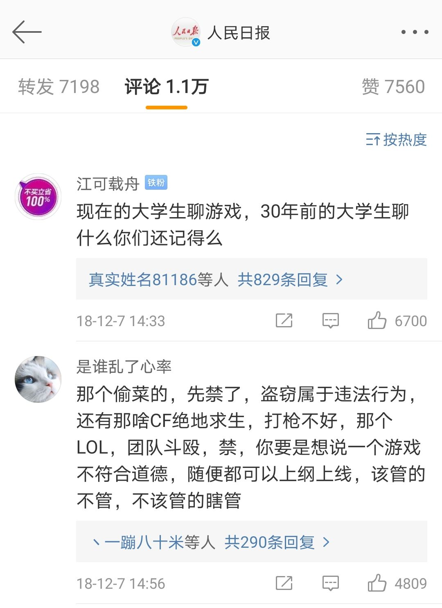

今天群友发了一张知乎的截图，内容如下：
不是我自夸，我上网这么多年，也算见多识广。看完他写的这些东西第一反应不是“好牛逼” 而是“有这种事我会不知道？”
于是我火速查阅了旧唐书，毕竟是二十四史之一，上网一查就有。果然，他引用的那些在人家原文里压根就没有，
纯属他自己瞎编的，好家伙虚空编史，这人是想当死妈迁啊。点了举报之后我陷入了沉思，像我这种动手能力、信息识别
能力较强的人能查明真相，那别人是不是看完就相信了呢？
在这个信息大爆炸的时代，营销号猖獗，过去造谣有嘴就行，现在造谣是有键盘就行，借助网络媒介传播速度远非过去能及。
我又回想起了18年遇到的一起网络谣言事件，这是我遇到过的最离谱，最令我印象深刻的网络谣言事件。
起因是这样的：18年年末，各种聊天群都在传一段关于网络游戏道德委员会的新闻视频，女主持念的新闻稿是这样的：
据央视新闻报道，网络游戏道德委员会日前在北京成立，找出了首批11款存在道德风险需要修改的游戏，比如说，
偷菜中的“偷”属于违法行为，绝地求生打枪太暴力了，《英雄联盟》团队斗殴是不可以的，这些游戏都得三观改正了才能给玩家使用。
就像我之前说的，我的动手能力和信息识别能力较强，看完我就觉得不对劲，而且这视频也没个出处，指不定是哪个网友为了找存在感自制的。
如果真是这样其实还不算离谱，我最终查明的真相才离谱到令我至今记忆犹新。
当时各大网络新闻媒体为了吸引流量不落人后都争相转载报道了此事，不过用词也颇为讲究，毕竟怕承担造谣责任，所以新闻标题都有双引号和疑似等字样。
在这里提示一下，在看这些自媒体新闻的时候一定要注意双引号，这是提升你信息识别能力的第一步。
这些自媒体编辑也懒得找出处，但评论总能找到答案（也不是总能）一位和我同样喜欢追根问底的网友给出了答案：
视频出处是湖北广电旗下云上襄阳12月10日的《今日播报》节目。
你以为到这就结束了么？下面才是高潮：
关于网络游戏道德委员会在北京成立这件事我还是相信其真实性的，果然，我在人民日报的官微发现了这个新闻，
但新闻中只是说这个委员会成立了，并没有提到其他内容。老规矩，看评论区，不看不知道一看下一跳，
下面这位“是谁乱了心率”网友的评论，可不就是那段新闻稿么。
至此，我对我们国家的宣传部门产生了深深的担忧，公务人员尸位素餐，新闻部门竟然拿微博评论当新闻稿，
还冠以“据央视新闻报道”字样，这样的新闻居然还能过审核，我甚至怀疑他们压根就不审核。
所以为什么我们国家一直要改革，改了这么多年还要继续深化改革，因为不改，早晚要走苏联的老路。